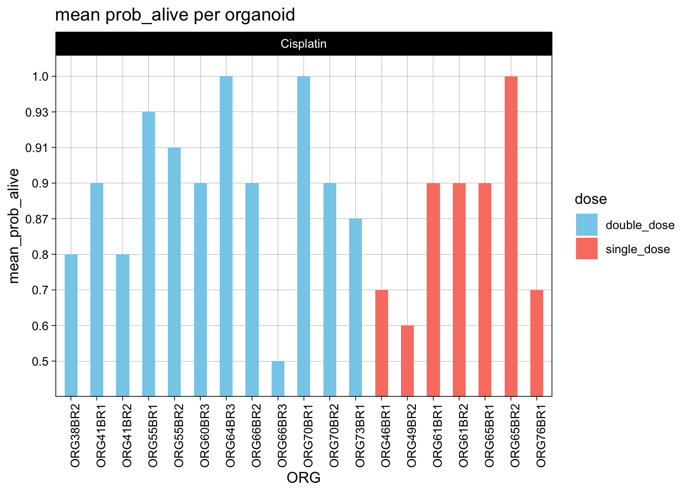
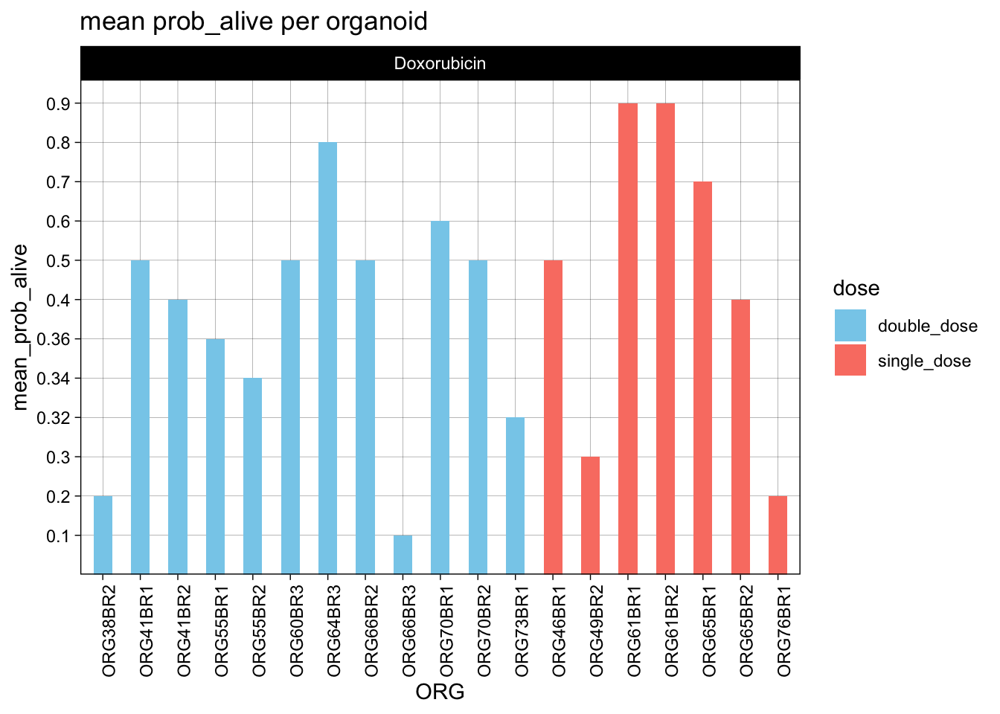
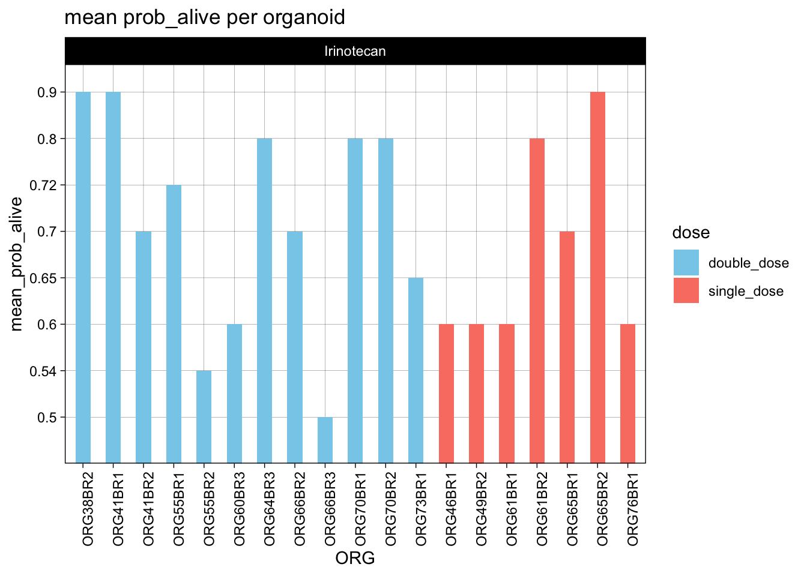
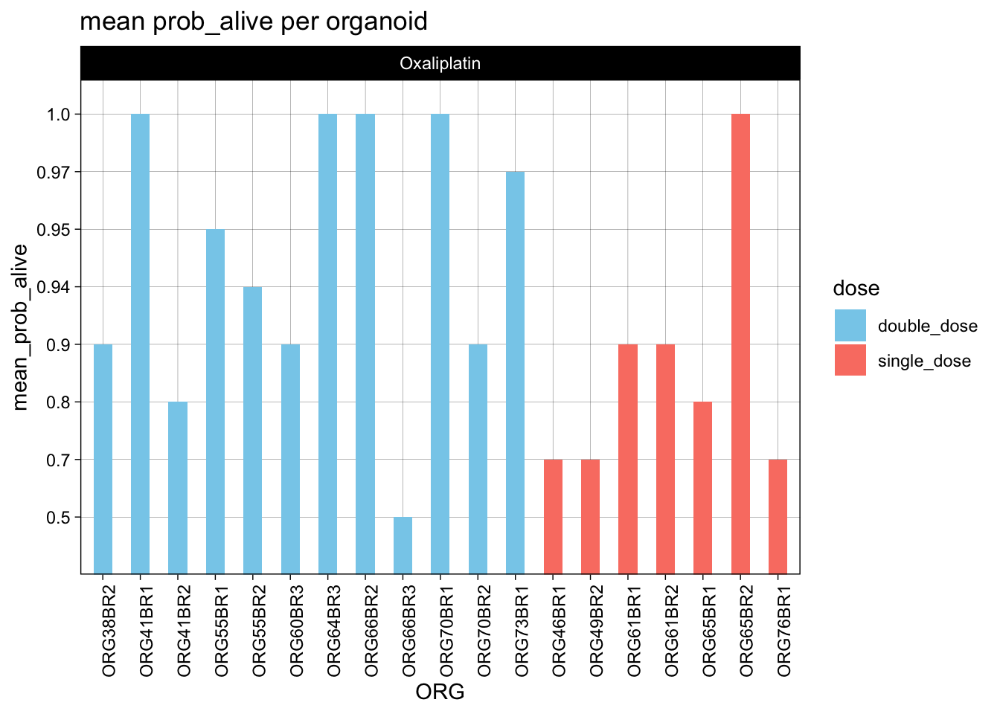
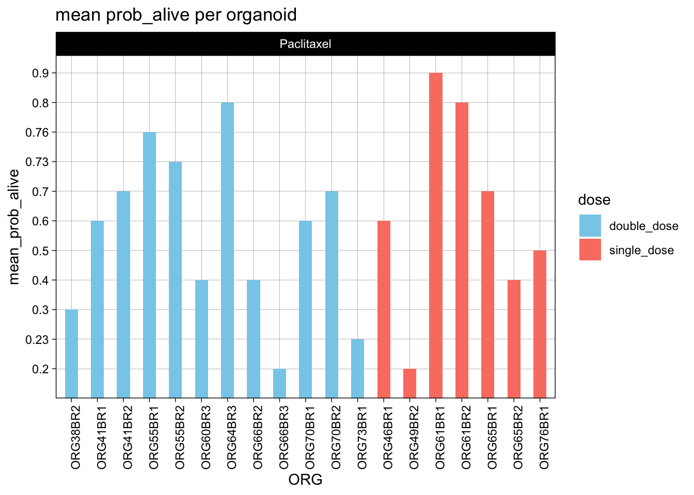
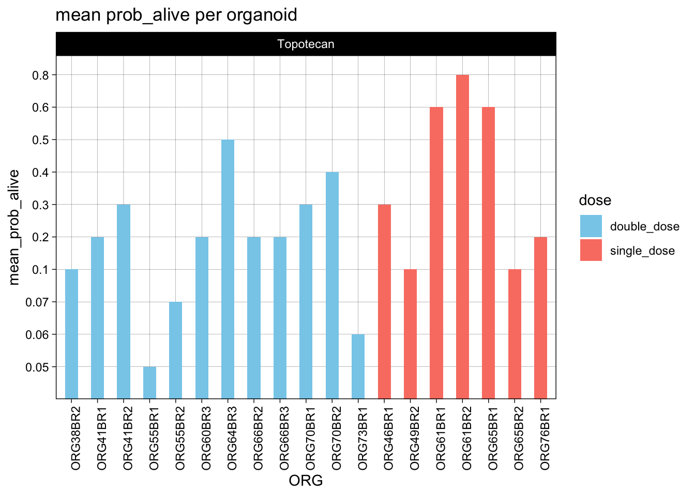

1 VS 2 dose comparison
2025-10-28
Last updated: 2025-11-18
Checks: 5 2
Knit directory:
20241205_OC_ML_image_analyses_single_agents/
This reproducible R Markdown analysis was created with workflowr (version 1.7.1). The Checks tab describes the reproducibility checks that were applied when the results were created. The Past versions tab lists the development history.
The R Markdown file has unstaged changes. To know which version of
the R Markdown file created these results, you’ll want to first commit
it to the Git repo. If you’re still working on the analysis, you can
ignore this warning. When you’re finished, you can run
wflow_publish to commit the R Markdown file and build the
HTML.
Great job! The global environment was empty. Objects defined in the global environment can affect the analysis in your R Markdown file in unknown ways. For reproduciblity it’s best to always run the code in an empty environment.
The command set.seed(20241205) was run prior to running
the code in the R Markdown file. Setting a seed ensures that any results
that rely on randomness, e.g. subsampling or permutations, are
reproducible.
Great job! Recording the operating system, R version, and package versions is critical for reproducibility.
Nice! There were no cached chunks for this analysis, so you can be confident that you successfully produced the results during this run.
Using absolute paths to the files within your workflowr project makes it difficult for you and others to run your code on a different machine. Change the absolute path(s) below to the suggested relative path(s) to make your code more reproducible.
| absolute | relative |
|---|---|
| /Users/dalvinikita/Documents/7_GitHub/20241205_OC_ML_image_analyses_single_agents/output/ORG38BR2/pred_all_data_mean_ORG38BR2.csv | output/ORG38BR2/pred_all_data_mean_ORG38BR2.csv |
| /Users/dalvinikita/Documents/7_GitHub/20241205_OC_ML_image_analyses_single_agents/output/ORG41BR1/pred_all_data_mean_ORG41BR1.csv | output/ORG41BR1/pred_all_data_mean_ORG41BR1.csv |
| /Users/dalvinikita/Documents/7_GitHub/20241205_OC_ML_image_analyses_single_agents/output/ORG41BR2/pred_all_data_mean_ORG41BR2.csv | output/ORG41BR2/pred_all_data_mean_ORG41BR2.csv |
| /Users/dalvinikita/Documents/7_GitHub/20241205_OC_ML_image_analyses_single_agents/output/ORG46BR1/pred_all_data_mean_ORG46BR1.csv | output/ORG46BR1/pred_all_data_mean_ORG46BR1.csv |
| /Users/dalvinikita/Documents/7_GitHub/20241205_OC_ML_image_analyses_single_agents/output/ORG49BR2/pred_all_data_mean_ORG49BR2.csv | output/ORG49BR2/pred_all_data_mean_ORG49BR2.csv |
| /Users/dalvinikita/Documents/7_GitHub/20241205_OC_ML_image_analyses_single_agents/output/ORG55BR1/pred_all_data_mean_ORG55BR1.csv | output/ORG55BR1/pred_all_data_mean_ORG55BR1.csv |
| /Users/dalvinikita/Documents/7_GitHub/20241205_OC_ML_image_analyses_single_agents/output/ORG55BR2/pred_all_data_mean_ORG55BR2.csv | output/ORG55BR2/pred_all_data_mean_ORG55BR2.csv |
| /Users/dalvinikita/Documents/7_GitHub/20241205_OC_ML_image_analyses_single_agents/output/ORG60BR3/pred_all_data_mean_ORG60BR3.csv | output/ORG60BR3/pred_all_data_mean_ORG60BR3.csv |
| /Users/dalvinikita/Documents/7_GitHub/20241205_OC_ML_image_analyses_single_agents/output/ORG61BR1/pred_all_data_mean_ORG61BR1.csv | output/ORG61BR1/pred_all_data_mean_ORG61BR1.csv |
| /Users/dalvinikita/Documents/7_GitHub/20241205_OC_ML_image_analyses_single_agents/output/ORG61BR2/pred_all_data_mean_ORG61BR2.csv | output/ORG61BR2/pred_all_data_mean_ORG61BR2.csv |
| /Users/dalvinikita/Documents/7_GitHub/20241205_OC_ML_image_analyses_single_agents/output/ORG64BR3/pred_all_data_mean_ORG64BR3.csv | output/ORG64BR3/pred_all_data_mean_ORG64BR3.csv |
| /Users/dalvinikita/Documents/7_GitHub/20241205_OC_ML_image_analyses_single_agents/output/ORG65BR1/pred_all_data_mean_ORG65BR1.csv | output/ORG65BR1/pred_all_data_mean_ORG65BR1.csv |
| /Users/dalvinikita/Documents/7_GitHub/20241205_OC_ML_image_analyses_single_agents/output/ORG65BR2/pred_all_data_mean_ORG65BR2.csv | output/ORG65BR2/pred_all_data_mean_ORG65BR2.csv |
| /Users/dalvinikita/Documents/7_GitHub/20241205_OC_ML_image_analyses_single_agents/output/ORG66BR2/pred_all_data_mean_ORG66BR2.csv | output/ORG66BR2/pred_all_data_mean_ORG66BR2.csv |
| /Users/dalvinikita/Documents/7_GitHub/20241205_OC_ML_image_analyses_single_agents/output/ORG66BR3/pred_all_data_mean_ORG66BR3.csv | output/ORG66BR3/pred_all_data_mean_ORG66BR3.csv |
| /Users/dalvinikita/Documents/7_GitHub/20241205_OC_ML_image_analyses_single_agents/output/ORG70BR1/pred_all_data_mean_ORG70BR1.csv | output/ORG70BR1/pred_all_data_mean_ORG70BR1.csv |
| /Users/dalvinikita/Documents/7_GitHub/20241205_OC_ML_image_analyses_single_agents/output/ORG70BR2/pred_all_data_mean_ORG70BR2.csv | output/ORG70BR2/pred_all_data_mean_ORG70BR2.csv |
| /Users/dalvinikita/Documents/7_GitHub/20241205_OC_ML_image_analyses_single_agents/output/ORG73BR1/pred_all_data_mean_ORG73BR1.csv | output/ORG73BR1/pred_all_data_mean_ORG73BR1.csv |
| /Users/dalvinikita/Documents/7_GitHub/20241205_OC_ML_image_analyses_single_agents/output/ORG73BR2/pred_all_data_mean_ORG73.csv | output/ORG73BR2/pred_all_data_mean_ORG73.csv |
| /Users/dalvinikita/Documents/7_GitHub/20241205_OC_ML_image_analyses_single_agents/output/ORG76BR1/pred_all_data_mean_ORG76BR1.csv | output/ORG76BR1/pred_all_data_mean_ORG76BR1.csv |
| /Users/dalvinikita/Documents/7_GitHub/20241205_OC_ML_image_analyses_single_agents/output/mean_average_prob_across_organoids.csv | output/mean_average_prob_across_organoids.csv |
Great! You are using Git for version control. Tracking code development and connecting the code version to the results is critical for reproducibility.
The results in this page were generated with repository version 6f7dc29. See the Past versions tab to see a history of the changes made to the R Markdown and HTML files.
Note that you need to be careful to ensure that all relevant files for
the analysis have been committed to Git prior to generating the results
(you can use wflow_publish or
wflow_git_commit). workflowr only checks the R Markdown
file, but you know if there are other scripts or data files that it
depends on. Below is the status of the Git repository when the results
were generated:
Ignored files:
Ignored: .DS_Store
Ignored: .Rhistory
Ignored: .Rproj.user/
Ignored: analysis/.DS_Store
Ignored: analysis/.RData
Ignored: analysis/.Rhistory
Ignored: analysis/SVM_1_ORG38BR2_Dox.html
Ignored: analysis/figure/
Ignored: data/.DS_Store
Ignored: data/images/.DS_Store
Ignored: data/raw_data/
Ignored: output/CYSTIC/
Ignored: output/ORG38BR2/
Ignored: output/ORG41BR1/
Ignored: output/ORG41BR2/
Ignored: output/ORG46BR1/
Ignored: output/ORG49BR2/
Ignored: output/ORG55BR1/
Ignored: output/ORG55BR2/
Ignored: output/ORG60BR3/
Ignored: output/ORG61BR1/
Ignored: output/ORG61BR2/
Ignored: output/ORG64BR3/
Ignored: output/ORG65BR1/
Ignored: output/ORG65BR2/
Ignored: output/ORG66BR2/
Ignored: output/ORG66BR3/
Ignored: output/ORG70BR1/
Ignored: output/ORG70BR2/
Ignored: output/ORG73BR1/
Ignored: output/ORG73BR2/
Ignored: output/ORG76BR1/
Ignored: output/SMALL_MIXED_DENSE/
Untracked files:
Untracked: analysis/SVM_CYSTIC_ORGS.Rmd
Untracked: analysis/SVM_SMALL_MIXED_DENSE_ORGS.Rmd
Untracked: code/zscore_heatmaps.R
Unstaged changes:
Modified: analysis/Phenotype_Visualisation.Rmd
Modified: analysis/SVM_1_ORG38BR2_Dox.Rmd
Modified: analysis/SVM_1_ORG66BR3_Dox.Rmd
Modified: analysis/SVM_1_ORG70BR2.Rmd
Modified: analysis/SVM_1_ORG73BR1.Rmd
Modified: analysis/dose_comparison.Rmd
Note that any generated files, e.g. HTML, png, CSS, etc., are not included in this status report because it is ok for generated content to have uncommitted changes.
These are the previous versions of the repository in which changes were
made to the R Markdown (analysis/dose_comparison.Rmd) and
HTML (docs/dose_comparison.html) files. If you’ve
configured a remote Git repository (see ?wflow_git_remote),
click on the hyperlinks in the table below to view the files as they
were in that past version.
| File | Version | Author | Date | Message |
|---|---|---|---|---|
| Rmd | 6f7dc29 | kitadalvi | 2025-11-10 | dose comparison added |
| html | 6f7dc29 | kitadalvi | 2025-11-10 | dose comparison added |
Warning: package 'ggplot2' was built under R version 4.4.1
Attaching package: 'dplyr'The following objects are masked from 'package:stats':
filter, lagThe following objects are masked from 'package:base':
intersect, setdiff, setequal, union`summarise()` has grouped output by 'Plate_ID'. You can override using the
`.groups` argument.
| Version | Author | Date |
|---|---|---|
| 6f7dc29 | kitadalvi | 2025-11-10 |

| Version | Author | Date |
|---|---|---|
| 6f7dc29 | kitadalvi | 2025-11-10 |

| Version | Author | Date |
|---|---|---|
| 6f7dc29 | kitadalvi | 2025-11-10 |

| Version | Author | Date |
|---|---|---|
| 6f7dc29 | kitadalvi | 2025-11-10 |

| Version | Author | Date |
|---|---|---|
| 6f7dc29 | kitadalvi | 2025-11-10 |

| Version | Author | Date |
|---|---|---|
| 6f7dc29 | kitadalvi | 2025-11-10 |

| Version | Author | Date |
|---|---|---|
| 6f7dc29 | kitadalvi | 2025-11-10 |

| Version | Author | Date |
|---|---|---|
| 6f7dc29 | kitadalvi | 2025-11-10 |

| Version | Author | Date |
|---|---|---|
| 6f7dc29 | kitadalvi | 2025-11-10 |

| Version | Author | Date |
|---|---|---|
| 6f7dc29 | kitadalvi | 2025-11-10 |

| Version | Author | Date |
|---|---|---|
| 6f7dc29 | kitadalvi | 2025-11-10 |

| Version | Author | Date |
|---|---|---|
| 6f7dc29 | kitadalvi | 2025-11-10 |
Relative AUC of pred_probs
[1] "result forORG38BR2: "
patient drug neutral_auc auc_val relative_auc
1 ORG38BR2 5-Fluouracil 19.900 13.605750 0.683706030150754
2 ORG38BR2 Carboplatin 19.900 16.166125 0.812368090452261
3 ORG38BR2 Cisplatin 9.900 6.621625 0.66885101010101
4 ORG38BR2 DMSO 0.000 NA NA
5 ORG38BR2 Docetaxel 19.900 6.036625 0.303347989949749
6 ORG38BR2 Doxorubicin 19.990 0.634250 0.031728364182091
7 ORG38BR2 Gemcitabine 19.900 5.298875 0.266275125628141
8 ORG38BR2 Irinotecan 19.900 15.053875 0.756476130653266
9 ORG38BR2 Leucovorin 19.900 17.570875 0.882958542713568
10 ORG38BR2 Media 0.000 NA NA
11 ORG38BR2 Mitomycin C 7.460 1.415625 0.189762064343164
12 ORG38BR2 Oxaliplatin 9.900 8.594000 0.868080808080808
13 ORG38BR2 Paclitaxel 19.900 6.151000 0.309095477386935
14 ORG38BR2 Staurosporine 19.980 0.924750 0.0462837837837838
15 ORG38BR2 Topotecan 19.955 1.338875 0.0670947131044851
16 ORG38BR2 TritonX 0.000 NA NA
[1] "result forORG41BR1: "
patient drug neutral_auc auc_val relative_auc
1 ORG41BR1 5-Fluouracil 19.900 18.529875 0.931149497487437
2 ORG41BR1 Carboplatin 19.900 18.809500 0.945201005025126
3 ORG41BR1 Cisplatin 9.900 9.323750 0.941792929292929
4 ORG41BR1 DMSO 0.000 NA NA
5 ORG41BR1 Docetaxel 19.900 11.582875 0.582054020100502
6 ORG41BR1 Doxorubicin 19.985 2.833875 0.141800100075056
7 ORG41BR1 Gemcitabine 19.900 6.449375 0.3240891959799
8 ORG41BR1 Irinotecan 19.900 15.986375 0.803335427135678
9 ORG41BR1 Leucovorin 19.900 18.995250 0.954535175879397
10 ORG41BR1 Media 0.000 NA NA
11 ORG41BR1 Mitomycin C 7.465 1.617625 0.216694574681849
12 ORG41BR1 Oxaliplatin 9.900 9.490500 0.958636363636364
13 ORG41BR1 Paclitaxel 19.900 12.034250 0.604736180904523
14 ORG41BR1 Staurosporine 19.975 1.128875 0.056514392991239
15 ORG41BR1 Topotecan 19.970 1.308125 0.0655045067601402
16 ORG41BR1 TritonX 0.000 NA NA
[1] "result forORG41BR2: "
patient drug neutral_auc auc_val relative_auc
1 ORG41BR2 5-Fluouracil 19.900 16.495500 0.82891959798995
2 ORG41BR2 Carboplatin 19.900 16.448750 0.826570351758794
3 ORG41BR2 Cisplatin 9.900 7.969625 0.805012626262626
4 ORG41BR2 DMSO 0.000 NA NA
5 ORG41BR2 Docetaxel 19.900 14.470875 0.727179648241206
6 ORG41BR2 Doxorubicin 19.965 2.843375 0.142417981467568
7 ORG41BR2 Gemcitabine 19.900 8.315125 0.417845477386935
8 ORG41BR2 Irinotecan 19.900 12.544125 0.630358040201005
9 ORG41BR2 Leucovorin 19.900 16.938875 0.851199748743719
10 ORG41BR2 Media 0.000 NA NA
11 ORG41BR2 Mitomycin C 7.405 2.075500 0.280283592167454
12 ORG41BR2 Oxaliplatin 9.900 8.288625 0.837234848484848
13 ORG41BR2 Paclitaxel 19.900 15.043125 0.755935929648241
14 ORG41BR2 Staurosporine 19.970 1.223125 0.0612481221832749
15 ORG41BR2 Topotecan 19.960 2.459375 0.123215180360721
16 ORG41BR2 TritonX 0.000 NA NA
[1] "result forORG46BR1: "
patient drug neutral_auc auc_val relative_auc
1 ORG46BR1 5-Fluouracil 19.9 13.415375 0.674139447236181
2 ORG46BR1 Carboplatin 19.9 13.171250 0.661871859296483
3 ORG46BR1 Cisplatin 9.9 6.854000 0.692323232323232
4 ORG46BR1 DMSO 0.0 NA NA
5 ORG46BR1 Docetaxel 19.9 13.522500 0.679522613065327
6 ORG46BR1 Doxorubicin 19.9 5.264375 0.264541457286432
7 ORG46BR1 Gemcitabine 19.9 8.995500 0.452035175879397
8 ORG46BR1 Irinotecan 19.9 11.572875 0.581551507537688
9 ORG46BR1 Leucovorin 19.9 15.132750 0.760439698492462
10 ORG46BR1 Media 0.0 NA NA
11 ORG46BR1 Mitomycin C 7.4 2.465500 0.333175675675676
12 ORG46BR1 Oxaliplatin 9.9 7.314875 0.738876262626263
13 ORG46BR1 Paclitaxel 19.9 12.070000 0.606532663316583
14 ORG46BR1 Staurosporine 19.9 3.736250 0.187751256281407
15 ORG46BR1 Topotecan 19.9 4.467625 0.224503768844221
16 ORG46BR1 TritonX 0.0 NA NA
[1] "result forORG49BR2: "
patient drug neutral_auc auc_val relative_auc
1 ORG49BR2 5-Fluouracil 19.900 13.036875 0.655119346733668
2 ORG49BR2 Carboplatin 19.900 10.759500 0.540678391959799
3 ORG49BR2 Cisplatin 9.900 3.897625 0.393699494949495
4 ORG49BR2 DMSO 0.000 NA NA
5 ORG49BR2 Docetaxel 19.915 6.372000 0.319959829274416
6 ORG49BR2 Doxorubicin 19.980 1.637125 0.0819381881881882
7 ORG49BR2 Gemcitabine 19.920 4.108000 0.206224899598394
8 ORG49BR2 Irinotecan 19.900 12.033625 0.604704773869347
9 ORG49BR2 Leucovorin 19.900 16.972375 0.852883165829146
10 ORG49BR2 Media 0.000 NA NA
11 ORG49BR2 Mitomycin C 7.450 0.749250 0.100570469798658
12 ORG49BR2 Oxaliplatin 9.900 6.938250 0.700833333333333
13 ORG49BR2 Paclitaxel 19.900 4.538875 0.228084170854271
14 ORG49BR2 Staurosporine 19.980 0.453375 0.0226914414414414
15 ORG49BR2 Topotecan 19.980 1.457250 0.0729354354354355
16 ORG49BR2 TritonX 0.000 NA NA
[1] "result forORG55BR1: "
patient drug neutral_auc auc_val relative_auc
1 ORG55BR1 5-Fluouracil 19.90 18.914000 0.950452261306533
2 ORG55BR1 Carboplatin 19.90 18.825750 0.946017587939698
3 ORG55BR1 Cisplatin 9.90 9.072500 0.916414141414142
4 ORG55BR1 DMSO 0.00 NA NA
5 ORG55BR1 Docetaxel 19.90 16.641250 0.836243718592965
6 ORG55BR1 Doxorubicin 19.99 1.784250 0.0892571285642822
7 ORG55BR1 Gemcitabine 19.92 3.344375 0.16789031124498
8 ORG55BR1 Irinotecan 19.90 13.906375 0.698812814070352
9 ORG55BR1 Leucovorin 19.90 18.840000 0.946733668341708
10 ORG55BR1 Media 0.00 NA NA
11 ORG55BR1 Mitomycin C 7.45 1.262125 0.169412751677852
12 ORG55BR1 Oxaliplatin 9.90 9.391000 0.948585858585859
13 ORG55BR1 Paclitaxel 19.90 16.207750 0.814459798994975
14 ORG55BR1 Staurosporine 19.99 0.891250 0.0445847923961981
15 ORG55BR1 Topotecan 19.98 0.869375 0.0435122622622623
16 ORG55BR1 TritonX 0.00 NA NA
[1] "result forORG55BR2: "
patient drug neutral_auc auc_val relative_auc
1 ORG55BR2 5-Fluouracil 19.900 18.055375 0.90730527638191
2 ORG55BR2 Carboplatin 19.900 18.367500 0.922989949748744
3 ORG55BR2 Cisplatin 9.900 8.822625 0.891174242424242
4 ORG55BR2 DMSO 0.000 NA NA
5 ORG55BR2 Docetaxel 19.900 17.253625 0.867016331658292
6 ORG55BR2 Doxorubicin 19.990 1.542625 0.0771698349174587
7 ORG55BR2 Gemcitabine 19.940 2.397750 0.120248244734203
8 ORG55BR2 Irinotecan 19.900 9.500625 0.477418341708543
9 ORG55BR2 Leucovorin 19.900 18.400500 0.92464824120603
10 ORG55BR2 Media 0.000 NA NA
11 ORG55BR2 Mitomycin C 7.475 0.936500 0.125284280936455
12 ORG55BR2 Oxaliplatin 9.900 9.243125 0.93364898989899
13 ORG55BR2 Paclitaxel 19.900 14.892625 0.74837311557789
14 ORG55BR2 Staurosporine 19.975 0.758000 0.0379474342928661
15 ORG55BR2 Topotecan 19.990 0.415750 0.0207978989494747
16 ORG55BR2 TritonX 0.000 NA NA
[1] "result forORG60BR3: "
patient drug neutral_auc auc_val relative_auc
1 ORG60BR3 5-Fluouracil 19.900 16.695750 0.838982412060302
2 ORG60BR3 Carboplatin 19.900 17.452875 0.877028894472362
3 ORG60BR3 Cisplatin 9.900 8.460250 0.854570707070707
4 ORG60BR3 DMSO 0.000 NA NA
5 ORG60BR3 Docetaxel 19.900 10.204250 0.512776381909548
6 ORG60BR3 Doxorubicin 19.965 3.991250 0.199912346606562
7 ORG60BR3 Gemcitabine 19.900 11.003625 0.552945979899497
8 ORG60BR3 Irinotecan 19.900 11.884875 0.597229899497487
9 ORG60BR3 Leucovorin 19.900 17.190000 0.863819095477387
10 ORG60BR3 Media 0.000 NA NA
11 ORG60BR3 Mitomycin C 7.400 3.259375 0.440456081081081
12 ORG60BR3 Oxaliplatin 9.900 8.739625 0.882790404040404
13 ORG60BR3 Paclitaxel 19.900 9.014000 0.452964824120603
14 ORG60BR3 Staurosporine 19.960 0.965125 0.0483529559118236
15 ORG60BR3 Topotecan 19.950 1.752750 0.0878571428571429
16 ORG60BR3 TritonX 0.000 NA NA
[1] "result forORG61BR1: "
patient drug neutral_auc auc_val relative_auc
1 ORG61BR1 5-Fluouracil 19.90 17.934125 0.901212311557789
2 ORG61BR1 Carboplatin 19.90 17.996000 0.904321608040201
3 ORG61BR1 Cisplatin 9.90 9.222375 0.93155303030303
4 ORG61BR1 DMSO 0.00 NA NA
5 ORG61BR1 Docetaxel 19.90 17.568000 0.882814070351759
6 ORG61BR1 Doxorubicin 19.90 17.014875 0.855018844221106
7 ORG61BR1 Gemcitabine 19.90 16.609875 0.834667085427136
8 ORG61BR1 Irinotecan 19.90 10.529375 0.52911432160804
9 ORG61BR1 Leucovorin 19.90 18.361500 0.922688442211055
10 ORG61BR1 Media 0.00 NA NA
11 ORG61BR1 Mitomycin C 7.40 6.679125 0.902584459459459
12 ORG61BR1 Oxaliplatin 9.90 8.950250 0.904065656565657
13 ORG61BR1 Paclitaxel 19.90 18.094625 0.909277638190955
14 ORG61BR1 Staurosporine 19.97 1.189375 0.059558087130696
15 ORG61BR1 Topotecan 19.90 7.245250 0.364082914572864
16 ORG61BR1 TritonX 0.00 NA NA
[1] "result forORG61BR2: "
patient drug neutral_auc auc_val relative_auc
1 ORG61BR2 5-Fluouracil 19.9 16.675250 0.837952261306533
2 ORG61BR2 Carboplatin 19.9 17.023375 0.855445979899498
3 ORG61BR2 Cisplatin 9.9 8.423875 0.850896464646465
4 ORG61BR2 DMSO 0.0 NA NA
5 ORG61BR2 Docetaxel 19.9 17.679875 0.888435929648241
6 ORG61BR2 Doxorubicin 19.9 17.875625 0.898272613065327
7 ORG61BR2 Gemcitabine 19.9 17.364625 0.872594221105528
8 ORG61BR2 Irinotecan 19.9 16.666125 0.837493718592965
9 ORG61BR2 Leucovorin 19.9 17.477000 0.878241206030151
10 ORG61BR2 Media 0.0 NA NA
11 ORG61BR2 Mitomycin C 7.4 6.403750 0.865371621621622
12 ORG61BR2 Oxaliplatin 9.9 8.597375 0.868421717171717
13 ORG61BR2 Paclitaxel 19.9 16.453875 0.826827889447236
14 ORG61BR2 Staurosporine 19.9 3.217750 0.161695979899497
15 ORG61BR2 Topotecan 19.9 13.521000 0.679447236180905
16 ORG61BR2 TritonX 0.0 NA NA
[1] "result forORG64BR3: "
patient drug neutral_auc auc_val relative_auc
1 ORG64BR3 5-Fluouracil 19.900 19.360125 0.972870603015075
2 ORG64BR3 Carboplatin 19.900 19.603000 0.985075376884422
3 ORG64BR3 Cisplatin 9.900 9.719875 0.981805555555555
4 ORG64BR3 DMSO 0.000 NA NA
5 ORG64BR3 Docetaxel 19.900 16.266875 0.817430904522613
6 ORG64BR3 Doxorubicin 19.900 10.602625 0.532795226130653
7 ORG64BR3 Gemcitabine 19.900 15.978250 0.802927135678392
8 ORG64BR3 Irinotecan 19.900 14.618625 0.734604271356784
9 ORG64BR3 Leucovorin 19.900 19.328375 0.971275125628141
10 ORG64BR3 Media 0.000 NA NA
11 ORG64BR3 Mitomycin C 7.400 4.111500 0.555608108108108
12 ORG64BR3 Oxaliplatin 9.900 9.706875 0.980492424242424
13 ORG64BR3 Paclitaxel 19.900 15.498250 0.778806532663317
14 ORG64BR3 Staurosporine 20.000 0.079500 0.003975
15 ORG64BR3 Topotecan 19.955 2.896875 0.145170383362566
16 ORG64BR3 TritonX 0.000 NA NA
[1] "result forORG65BR1: "
patient drug neutral_auc auc_val relative_auc
1 ORG65BR1 5-Fluouracil 19.90 16.453250 0.82679648241206
2 ORG65BR1 Carboplatin 19.90 16.493250 0.828806532663317
3 ORG65BR1 Cisplatin 9.90 8.381125 0.846578282828283
4 ORG65BR1 DMSO 0.00 NA NA
5 ORG65BR1 Docetaxel 19.90 14.560250 0.731670854271357
6 ORG65BR1 Doxorubicin 19.90 13.496625 0.678222361809045
7 ORG65BR1 Gemcitabine 19.90 13.791375 0.69303391959799
8 ORG65BR1 Irinotecan 19.90 11.485500 0.577160804020101
9 ORG65BR1 Leucovorin 19.90 17.019625 0.855257537688442
10 ORG65BR1 Media 0.00 NA NA
11 ORG65BR1 Mitomycin C 7.40 3.181500 0.429932432432432
12 ORG65BR1 Oxaliplatin 9.90 8.351500 0.843585858585859
13 ORG65BR1 Paclitaxel 19.90 14.499125 0.728599246231156
14 ORG65BR1 Staurosporine 19.95 1.605750 0.0804887218045113
15 ORG65BR1 Topotecan 19.90 9.211250 0.462876884422111
16 ORG65BR1 TritonX 0.00 NA NA
[1] "result forORG65BR2: "
patient drug neutral_auc auc_val relative_auc
1 ORG65BR2 5-Fluouracil 19.90 18.802875 0.944868090452261
2 ORG65BR2 Carboplatin 19.90 18.835500 0.946507537688442
3 ORG65BR2 Cisplatin 9.90 9.461000 0.955656565656565
4 ORG65BR2 DMSO 0.00 NA NA
5 ORG65BR2 Docetaxel 19.90 8.550750 0.429685929648241
6 ORG65BR2 Doxorubicin 19.99 1.668625 0.0834729864932466
7 ORG65BR2 Gemcitabine 19.90 8.091625 0.40661432160804
8 ORG65BR2 Irinotecan 19.90 16.132750 0.810690954773869
9 ORG65BR2 Leucovorin 19.90 19.383625 0.974051507537689
10 ORG65BR2 Media 0.00 NA NA
11 ORG65BR2 Mitomycin C 7.49 1.691250 0.225801068090788
12 ORG65BR2 Oxaliplatin 9.90 9.616875 0.971401515151515
13 ORG65BR2 Paclitaxel 19.90 8.277625 0.415961055276382
14 ORG65BR2 Staurosporine 19.99 0.366000 0.0183091545772886
15 ORG65BR2 Topotecan 19.97 1.743875 0.0873247371056585
16 ORG65BR2 TritonX 0.00 NA NAWarning in max(auc_df_mean$Concentration): no non-missing arguments to max;
returning -InfWarning in min(structure(logical(0), dim = c(0L, 2L), dimnames = list(NULL, :
no non-missing arguments to min; returning InfWarning in min(x, na.rm = TRUE): no non-missing arguments to min; returning Inf[1] "result forORG66BR2: "
patient drug neutral_auc auc_val relative_auc
1 ORG66BR2 5-Fluouracil 19.900 17.561125 0.882468592964824
2 ORG66BR2 Carboplatin 19.900 19.113500 0.960477386934674
3 ORG66BR2 Cisplatin 9.900 9.244875 0.933825757575757
4 ORG66BR2 DMSO 0.000 NA NA
5 ORG66BR2 Docetaxel 19.900 8.082250 0.406143216080402
6 ORG66BR2 Doxorubicin 19.975 3.184000 0.159399249061327
7 ORG66BR2 Gemcitabine 19.900 7.056125 0.354579145728643
8 ORG66BR2 Irinotecan 19.900 10.885500 0.547010050251256
9 ORG66BR2 Leucovorin 19.900 18.759875 0.942707286432161
10 ORG66BR2 Media 0.000 NA NA
11 ORG66BR2 Mitomycin C 7.400 1.945250 0.262871621621622
12 ORG66BR2 Oxaliplatin 9.900 9.443125 0.95385101010101
13 ORG66BR2 Paclitaxel 19.900 6.824000 0.342914572864322
14 ORG66BR2 Staurosporine 19.950 1.196750 0.0599874686716792
15 ORG66BR2 Topotecan 19.900 2.534750 0.127374371859296
16 ORG66BR2 TritonX -Inf NA NA
[1] "result forORG66BR3: "
patient drug neutral_auc auc_val relative_auc
1 ORG66BR3 5-Fluouracil 19.900 9.659500 0.485402010050251
2 ORG66BR3 Carboplatin 19.900 10.802000 0.542814070351759
3 ORG66BR3 Cisplatin 9.900 4.945000 0.49949494949495
4 ORG66BR3 DMSO 0.000 NA NA
5 ORG66BR3 Docetaxel 19.900 3.956250 0.198806532663317
6 ORG66BR3 Doxorubicin 19.905 2.216625 0.111360211002261
7 ORG66BR3 Gemcitabine 19.900 4.010500 0.201532663316583
8 ORG66BR3 Irinotecan 19.900 8.092625 0.406664572864322
9 ORG66BR3 Leucovorin 19.900 10.334375 0.519315326633166
10 ORG66BR3 Media 0.000 NA NA
11 ORG66BR3 Mitomycin C 7.400 0.960000 0.12972972972973
12 ORG66BR3 Oxaliplatin 9.900 5.286500 0.533989898989899
13 ORG66BR3 Paclitaxel 19.900 4.437250 0.222977386934673
14 ORG66BR3 Staurosporine 19.905 2.103250 0.105664405928159
15 ORG66BR3 Topotecan 19.900 2.961250 0.148806532663317
16 ORG66BR3 TritonX 0.000 NA NA
[1] "result forORG70BR1: "
patient drug neutral_auc auc_val relative_auc
1 ORG70BR1 5-Fluouracil 19.900 18.670500 0.93821608040201
2 ORG70BR1 Carboplatin 19.900 18.908750 0.950188442211055
3 ORG70BR1 Cisplatin 9.900 9.359875 0.945441919191919
4 ORG70BR1 DMSO 0.000 NA NA
5 ORG70BR1 Docetaxel 19.900 12.550625 0.630684673366834
6 ORG70BR1 Doxorubicin 19.980 4.631625 0.231813063063063
7 ORG70BR1 Gemcitabine 19.900 8.170250 0.410565326633166
8 ORG70BR1 Irinotecan 19.900 14.908750 0.749183417085427
9 ORG70BR1 Leucovorin 19.900 19.080500 0.958819095477387
10 ORG70BR1 Media 0.000 NA NA
11 ORG70BR1 Mitomycin C 7.475 2.512625 0.336137123745819
12 ORG70BR1 Oxaliplatin 9.900 9.481875 0.957765151515151
13 ORG70BR1 Paclitaxel 19.900 12.198375 0.612983668341708
14 ORG70BR1 Staurosporine 19.985 0.433625 0.0216975231423568
15 ORG70BR1 Topotecan 19.980 1.487500 0.0744494494494494
16 ORG70BR1 TritonX 0.000 NA NA
[1] "result forORG70BR2: "
patient drug neutral_auc auc_val relative_auc
1 ORG70BR2 5-Fluouracil 19.900 18.287750 0.918982412060302
2 ORG70BR2 Carboplatin 19.900 18.999000 0.954723618090452
3 ORG70BR2 Cisplatin 9.900 9.496625 0.95925505050505
4 ORG70BR2 DMSO 0.000 NA NA
5 ORG70BR2 Docetaxel 19.900 14.240750 0.715615577889447
6 ORG70BR2 Doxorubicin 19.980 2.964500 0.148373373373373
7 ORG70BR2 Gemcitabine 19.900 10.776500 0.541532663316583
8 ORG70BR2 Irinotecan 19.900 14.266875 0.716928391959799
9 ORG70BR2 Leucovorin 19.900 19.024000 0.955979899497488
10 ORG70BR2 Media 0.000 NA NA
11 ORG70BR2 Mitomycin C 7.475 2.445125 0.327107023411371
12 ORG70BR2 Oxaliplatin 9.900 9.046250 0.913762626262626
13 ORG70BR2 Paclitaxel 19.900 13.521750 0.679484924623116
14 ORG70BR2 Staurosporine 19.990 0.306500 0.0153326663331666
15 ORG70BR2 Topotecan 19.975 1.854125 0.0928222778473091
16 ORG70BR2 TritonX 0.000 NA NA
[1] "result forORG73BR1: "
patient drug neutral_auc auc_val relative_auc
1 ORG73BR1 5-Fluouracil 19.900 15.050000 0.756281407035176
2 ORG73BR1 Carboplatin 19.900 18.741750 0.94179648241206
3 ORG73BR1 Cisplatin 9.900 7.949125 0.802941919191919
4 ORG73BR1 DMSO 0.000 NA NA
5 ORG73BR1 Docetaxel 19.900 7.720500 0.387964824120603
6 ORG73BR1 Doxorubicin 19.995 1.229500 0.0614903725931483
7 ORG73BR1 Gemcitabine 19.930 3.122875 0.156692172604114
8 ORG73BR1 Irinotecan 19.900 7.951375 0.399566582914573
9 ORG73BR1 Leucovorin 19.900 19.466625 0.978222361809045
10 ORG73BR1 Media 0.000 NA NA
11 ORG73BR1 Mitomycin C 7.490 0.445750 0.0595126835781041
12 ORG73BR1 Oxaliplatin 9.900 9.602750 0.969974747474747
13 ORG73BR1 Paclitaxel 19.900 5.813250 0.292123115577889
14 ORG73BR1 Staurosporine 19.995 0.167125 0.00835833958489622
15 ORG73BR1 Topotecan 20.000 0.296000 0.0148
16 ORG73BR1 TritonX 0.000 NA NA
[1] "result forORG76BR1: "
patient drug neutral_auc auc_val relative_auc
1 ORG76BR1 5-Fluouracil 19.900 14.131375 0.710119346733668
2 ORG76BR1 Carboplatin 19.900 14.130750 0.710087939698493
3 ORG76BR1 Cisplatin 9.900 6.769625 0.683800505050505
4 ORG76BR1 DMSO 0.000 NA NA
5 ORG76BR1 Docetaxel 19.900 9.256625 0.465157035175879
6 ORG76BR1 Doxorubicin 19.975 1.335250 0.066846057571965
7 ORG76BR1 Gemcitabine 19.900 7.333625 0.368523869346734
8 ORG76BR1 Irinotecan 19.900 10.198125 0.512468592964824
9 ORG76BR1 Leucovorin 19.900 14.749250 0.741168341708543
10 ORG76BR1 Media 0.000 NA NA
11 ORG76BR1 Mitomycin C 7.400 1.921875 0.259712837837838
12 ORG76BR1 Oxaliplatin 9.900 7.116750 0.718863636363636
13 ORG76BR1 Paclitaxel 19.900 9.927750 0.498881909547739
14 ORG76BR1 Staurosporine 19.935 1.834250 0.0920115374968648
15 ORG76BR1 Topotecan 19.945 2.172625 0.108930809726749
16 ORG76BR1 TritonX 0.000 NA NA
R version 4.4.0 (2024-04-24)
Platform: aarch64-apple-darwin20
Running under: macOS 15.2
Matrix products: default
BLAS: /Library/Frameworks/R.framework/Versions/4.4-arm64/Resources/lib/libRblas.0.dylib
LAPACK: /Library/Frameworks/R.framework/Versions/4.4-arm64/Resources/lib/libRlapack.dylib; LAPACK version 3.12.0
locale:
[1] en_US.UTF-8/en_US.UTF-8/en_US.UTF-8/C/en_US.UTF-8/en_US.UTF-8
time zone: Australia/Melbourne
tzcode source: internal
attached base packages:
[1] stats graphics grDevices utils datasets methods base
other attached packages:
[1] DT_0.33 dplyr_1.1.4 ggplot2_4.0.0 workflowr_1.7.1
loaded via a namespace (and not attached):
[1] gtable_0.3.6 xfun_0.52 bslib_0.9.0
[4] htmlwidgets_1.6.4 processx_3.8.6 lattice_0.22-7
[7] callr_3.7.6 vctrs_0.6.5 tools_4.4.0
[10] ps_1.9.1 generics_0.1.3 tibble_3.2.1
[13] pkgconfig_2.0.3 Matrix_1.7-3 RColorBrewer_1.1-3
[16] S7_0.2.0 ggridges_0.5.6 lifecycle_1.0.4
[19] compiler_4.4.0 farver_2.1.2 stringr_1.5.1
[22] git2r_0.36.2 getPass_0.2-4 httpuv_1.6.15
[25] fontquiver_0.2.1 fontLiberation_0.1.0 htmltools_0.5.8.1
[28] sass_0.4.10 yaml_2.3.10 later_1.4.2
[31] pillar_1.10.2 jquerylib_0.1.4 whisker_0.4.1
[34] tidyr_1.3.1 MASS_7.3-65 cachem_1.1.0
[37] mosaicCore_0.9.5 fontBitstreamVera_0.1.1 tidyselect_1.2.1
[40] digest_0.6.37 stringi_1.8.7 purrr_1.0.4
[43] forcats_1.0.0 geepack_1.3.13 labelled_2.16.0
[46] rprojroot_2.0.4 fastmap_1.2.0 grid_4.4.0
[49] cli_3.6.4 magrittr_2.0.3 dichromat_2.0-0.1
[52] geeM_0.10.1 broom_1.0.8 ggformula_1.0.0
[55] clipr_0.8.0 withr_3.0.2 gdtools_0.4.4
[58] scales_1.4.0 promises_1.3.2 backports_1.5.0
[61] rmarkdown_2.29 httr_1.4.7 hms_1.1.3
[64] evaluate_1.0.3 knitr_1.50 haven_2.5.4
[67] rlang_1.1.6 MESS_0.6.0 ggiraph_0.9.2
[70] Rcpp_1.1.0 glue_1.8.0 rstudioapi_0.17.1
[73] jsonlite_2.0.0 R6_2.6.1 systemfonts_1.3.1
[76] fs_1.6.6